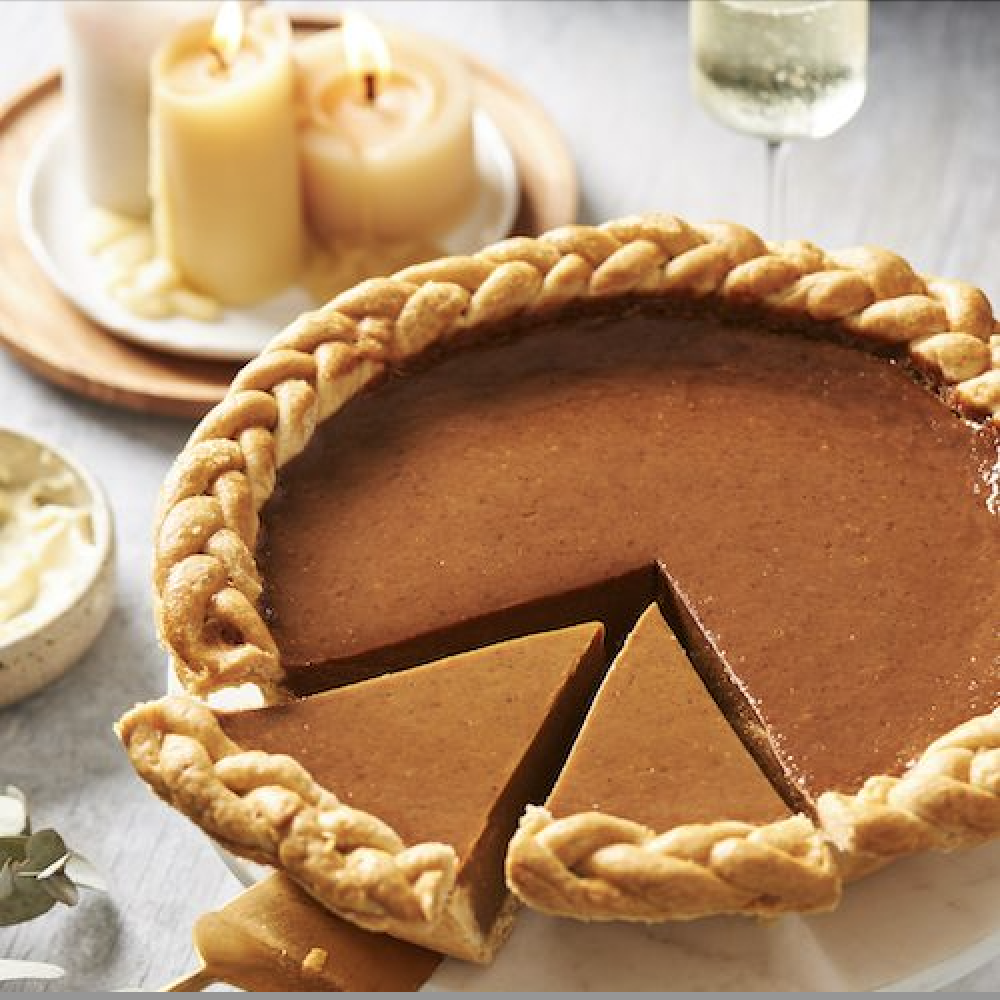

Pumpkin Pie

Ingredients:
- 1 (9-inch) unbaked pie crust
- 1 can (15 oz) pumpkin puree
- 1 cup sweetened condensed milk
- 2 large eggs
- 1 tsp ground cinnamon
- 1/2 tsp ground nutmeg
- 1/2 tsp ground ginger
- 1/4 tsp salt
Instructions:
- Preheat oven to 425°F (220°C).
- In a large bowl, mix together pumpkin puree, sweetened condensed milk, eggs, spices, and
salt.
- Pour filling into the unbaked pie crust.
- Bake for 15 minutes, then reduce temperature to 350°F (175°C) and bake for an additional
35-40 minutes, or until set.
- Let cool before serving.